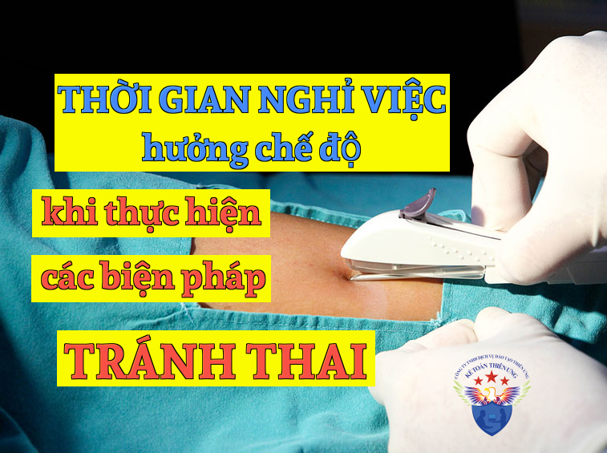

Quy định về thời gian nghỉ việc hưởng chế độ khi thực hiện các biện pháp tránh thai mới nhất năm 2025 theo Luật Bảo hiểm xã hội số: 41/2024/QH15 có hiệu lực từ ngày 01/7/2025.
Khi thực hiện các biện pháp tránh thai thì người lao động sẽ được hưởng chế độ theo quy định tại điều 57 của Luật BHXH số: 41/2024/QH15 như sau:
Điều 57. Thời gian nghỉ việc hưởng chế độ khi thực hiện các biện pháp tránh thai
1. Thời gian người lao động nghỉ việc hưởng chế độ thai sản khi thực hiện các biện pháp tránh thai do người hành nghề khám bệnh, chữa bệnh thuộc cơ sở khám bệnh, chữa bệnh chỉ định nhưng không quá 07 ngày đối với lao động nữ đặt dụng cụ tránh thai trong tử cung và không quá 15 ngày đối với người lao động thực hiện biện pháp triệt sản.
2. Thời gian nghỉ việc hưởng chế độ thai sản quy định tại khoản 1 Điều này tính cả ngày nghỉ lễ, tết, ngày nghỉ hằng tuần.
==============================
Công ty đào tạo Kế Toán Diệu Tâm mời các bạn tham khảo thêm:
Công ty đào tạo Kế Toán Diệu Tâm mời các bạn tham khảo thêm:
Thời gian nghỉ việc hưởng chế độ thai sản khi sảy thai, phá thai, thai chết trong tử cung, thai chết trong khi chuyển dạ, thai ngoài tử cung
